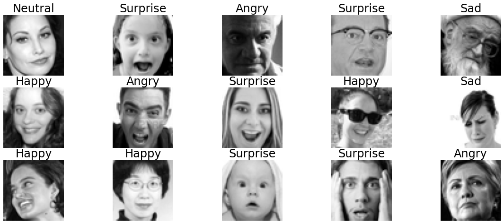
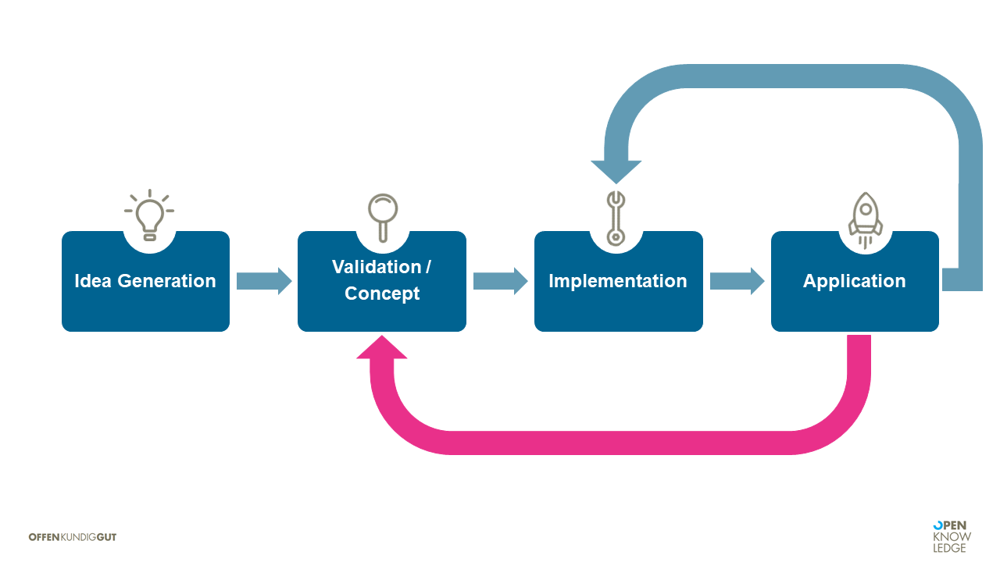
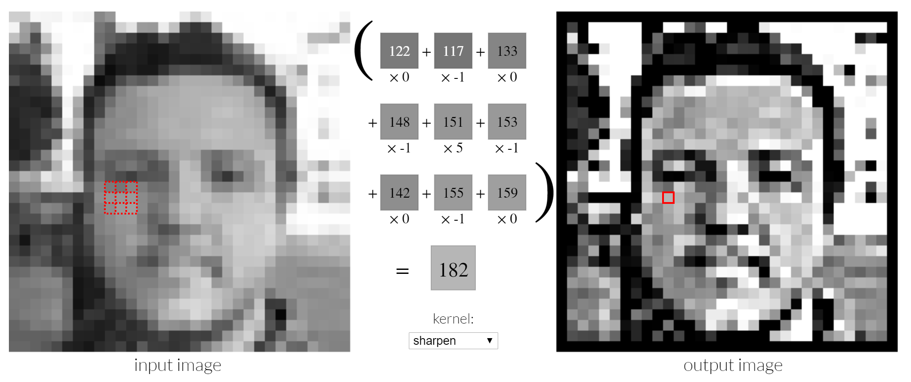
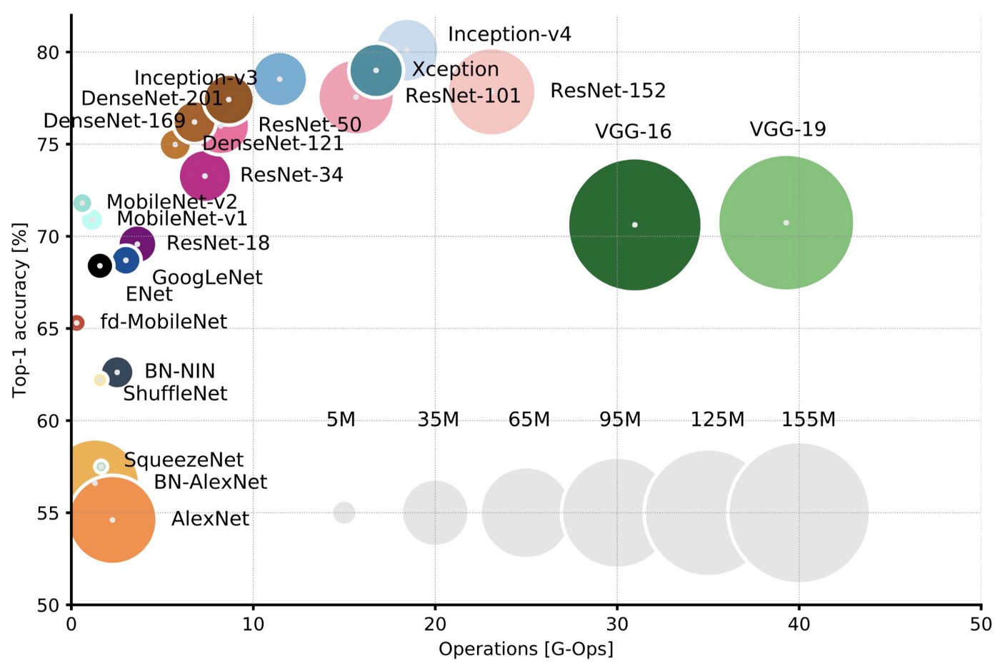

### Tims Kram - https://github.com/TimWue/facialExpressionRecognition - https://github.com/TimWue/serve.cnn
### OpenCV - OpenCV mit interaktivem Notebook nach und nach die Basics machen in Colab - https://docs.opencv.org/4.x/d5/d10/tutorial_js_root.html - https://docs.opencv.org/4.x/d2/d99/tutorial_js_face_detection.html - https://docs.opencv.org/4.x/db/d28/tutorial_cascade_classifier.html - https://github.com/opencv/opencv/tree/4.x/data/haarcascades - https://github.com/joaopdss/FacialExpressionRecognition - https://blog.devgenius.io/facial-expression-recognition-with-tensorflow-90f6174163c3 - We are going to use only Angry, Happy, Sad and Surprise. The reason is that disgust has almost no images, but for Disgust and Fear images aren't good, so would only confuse our model. - https://github.com/Microsoft/FERPlus
### Story * Idea: Find a facial expression * Present * Solve using machine learning? * Conditions, Check, Process * Validation * What do you need for an ML approach * Data * Metric * ML algorithm * Professionalize * does not work * need to convert to gray * we don't have clipped ROIs * scale to 48x48 * Past * extract region of interest (ROI) * Production: in Browser mit JS
### Topic * Image basics: bit maps * Getting and reading in training data * Training a standard architecture network * Does a custom architecture make sense? Only for understanding?
### Jetzt * Skelett Anwendung bauen, die das Modell lädt und einfach guckt, ob irgendwas geht * modell laden * evtl. einen schwarzen blob einfüttern * camara aufnehmen * SW, größe auf 48, 48 * normalisieren * ins Modell kloppen * gucken, wie lange eine Vorhersage braucht * Ausgabe der Klasse direkt in DOM * hier: /home/olli/cv/serve.cnn/tensorflowStuff.js
TODOs * Alle Hands-On Teile so haben, dass die per Default schon zucken * Story in Folien aufbauen * Allgemeine OpenCV Teile aus Folien * in OpenCV: and remove noise and other artefacts. * Welches Netzwerk * https://keras.io/api/applications/ Sobald Internet da: mit den Bildern ein Netz trainieren * hier abgucken: /home/olli/cv/facialExpressionRecognition/EmotionDetection.ipynb * und da: https://github.com/joaopdss/FacialExpressionRecognition * ausgewählte Themen aus practical cnn, z.B. Alibi Explain * 2022-scipy-generalization.html * https://github.com/DJCordhose/ml-resources/blob/main/notebooks/image/generalization.ipynb
* bit.ly
# Image Recognition with OpenCV and TensorFlow ### ODSC West, San Francisco, November 2022 https://odsc.com/speakers/image-recognition-with-opencv-and-tensorflow/ Oliver Zeigermann, OPEN KNOWLEDGE These slides: http://bit.ly/odsc-2022-cv <!-- https://djcordhose.github.io/ml-resources/2022-odsc-sf-image-recognition.html -->
Exercise: - jede Zelle ausführen, also darauf achten, dass die alle Sinn machen - TensorFlow 1. choose a neural network architecture and train it on the data provided 1. make sure the model can be converted to the TensorFlow.js format - OpenCV 1. 1. Take a few pictures of yourself and use with the code provided Wie können Übungen aussehen?
### Who is Olli <img src='img/olli-opa.jpeg'> <p> <a target="_blank" href="mailto:oliver.zeigermann@openknowledge.de">Oliver Zeigermann</a>: Head of AI@<a href='https://www.openknowledge.de/'>OPEN KNOWLEDGE</a> </p>
### Who are you? * What do you do? * What do you know already? * Why are you here?
## Questions are welcome *at any time* ### Questions, Doubts, Concerns This is not school
### Agenda 1. Our use case 1. Present: Deep Learning 1. Past: Classic Computer Vision 1. Future: Transformers - Bonus Level
### Agenda 1. _Our use case_ 1. Present: Deep Learning 1. Past: Classic Computer Vision 1. Future: Transformers
### Use Case: Detecting emotions  _we do not just fool around, we want to bring this into production on edge devices_
### Agenda 1. Our use case 1. _Present: Deep Learning_ 1. Past: Classic Computer Vision 1. Future: Transformers
### Machine Learning <img src="img/en-ml-vs-dev-1.png">
### Machine Learning <img src="img/en-ml-vs-dev-2.png">
### AI vs Machine Learning vs Deep Learning <img src="img/AI.png">
### When is AI/ML applicable? * The solution to the problem at hand is unknown or _difficult to specify_. * There is _data_ with a clear, simple input and, at best, output that matches it * There are _patterns_ in the input that can be used for prediction * The solution to the problem can tolerate error or _uncertainty_. * _80% accuracy_ is rarely exceeded * We are willing and able to perform _open-ended experiments_ in an initial phase.
### Phases of a machine learning project 
### Data is king * What data is available? * Often not trivially answerable at all * How much data? * Which quality * Which areas are covered? * Data compatible with use case? * How much effort for preparation?
### Hands On I: Getting and preprocessing faces data * Download data: https://www.kaggle.com/c/challenges-in-representation-learning-facial-expression-recognition-challenge/data * You will need a Kaggle account for that, create one if you do not have one so far * Make yourself comfortable with the data * Decide which classes you want to train on https://colab.research.google.com/github/DJCordhose/ml-resources/blob/main/notebooks/cv/faces-data.ipynb?hl=en
### Machine learning on manual features We manually extract features and use them to train a classifier * We could extract a whole set of features from our images * The first could be circles * Edges, contours and segments are common as well * But we can also extract even more abstract features like the size of the ring * We encode these features numerically and send them into machine learning algorithms
### Image recognition with Deep Learning We also learn feature extraction * Deep Learning is a special form of Machine Learning * Neural networks with many layers * Dense layers can be efficiently implemented via matrix multiplications * Training via backpropagation * 3 layers with enough neurons and partial linear activation (ReLU) can be trained to approximate arbitrary functions * This means also theoretically they are trainable on any image recognition task
### But images are special * In pictures neighborhood of pixels has a meaning * Objects are connected to each other * Features in an object are translation invariant
### Special layers for image recognition Convolutional Neural Networks (CNNs) * we use our knowledge about images * an old acquaintance: Convolutions * convolutions have very few parameters, and are translation invariant * the same filter goes over all parts of the image * neural networks can learn arbitrary convolution kernels * if arranged sequentially, they can extract features of the image
### Understanding Convolutions  https://setosa.io/ev/image-kernels/
### Deep Learning with CNNs <img src="img/vgg.png"> _start with a set of convolutional blocks for feature extraction and ends with a classical classifier_
How do layers play together?
https://transcranial.github.io/keras-js/#/mnist-cnn
### Overview of Architectures  https://towardsdatascience.com/neural-network-architectures-156e5bad51ba https://arxiv.org/abs/1605.07678
### Libraries for Deep Learning * *PyTorch: Top dog in academia * often has the first implementations of new ideas * *TensorFlow / Keras*: Top dog in industrial environment * Models pre-trained on Imagenet for direct use or transfer learning: https://keras.io/applications * Special building blocks for computer vision (augmentation, object detection, stable diffusion): https://keras.io/keras_cv/
### Hands On II: Train a CNN on the data * Choose a given architecture * Train using the prepared data * What score can you get? https://colab.research.google.com/github/DJCordhose/ml-resources/blob/main/notebooks/cv/faces-cnn.ipynb?hl=en
### Done? _Objective: Recognize emotional state of user on mobile device_ * we can detect the emotion on the given training set to a reasonable accuracy * but 1. this is a TensorFlow model not running on your mobile phone 1. even if it does run, will it have a decent performance 1. main issue * training data had faces nicely cut out * our camera on mobile phone does not do this * images are high res * images are color, not b/w 1. how often do we trigger the neural network?
### Remember: ML solutions are almost never just the model, but rather a system <img src="img/en/production.PNG">
### After having validated the approach we need to implement it for production
### Hands On III: Export your CNN * Save your neural network using tensorflow.js * You can try it locally using the skeleton provided https://colab.research.google.com/github/DJCordhose/ml-resources/blob/main/notebooks/cv/faces-cnn-export.ipynb?hl=en
### Agenda 1. Our use case 1. Present: Deep Learning 1. _Past: Classic Computer Vision_ 1. Future: Transformers
### Extracting random objects from an image Rather academic than solved industrially <img src="img/image-recognition/kites_detections_output.jpg"> <small>https://github.com/tensorflow/models/tree/master/research/object_detection https://github.com/tensorflow/models/blob/master/research/object_detection/g3doc/tf2_detection_zoo.md </small>
### But what about faces specifically? * Can be done * also based on ML, but ML other people have already done for us * requires a good set of bounding boxes as training data * advanced techniques like SSD (https://towardsdatascience.com/ssd-single-shot-detector-for-object-detection-using-multibox-1818603644ca) require a lot of compute to train * Examples * https://docs.opencv.org/4.x/db/d28/tutorial_cascade_classifier.html * https://pyimagesearch.com/2018/02/26/face-detection-with-opencv-and-deep-learning/ * https://pyimagesearch.com/2021/04/26/face-detection-tips-suggestions-and-best-practices/ * https://pyimagesearch.com/2022/10/24/thermal-vision-fever-detector-with-python-and-opencv-starter-project/
### But what about faces specifically? * Can be done * also based on ML, but ML other people have already done for us * requires a good set of bounding boxes as training data * advanced techniques like SSD (https://towardsdatascience.com/ssd-single-shot-detector-for-object-detection-using-multibox-1818603644ca) require a lot of compute to train
### Our approach: Cascade Classifier * OpenCV implementation available * error prone, but fast * works in browser * fast and small model * alternatives: https://pyimagesearch.com/2021/04/26/face-detection-tips-suggestions-and-best-practices/ https://docs.opencv.org/4.x/db/d28/tutorial_cascade_classifier.html <!-- * Links * https://docs.opencv.org/4.x/db/d28/tutorial_cascade_classifier.html --> <!-- * https://pyimagesearch.com/2021/04/26/face-detection-tips-suggestions-and-best-practices/ --> <!-- * https://pyimagesearch.com/2022/10/24/thermal-vision-fever-detector-with-python-and-opencv-starter-project/ * https://pyimagesearch.com/2018/02/26/face-detection-with-opencv-and-deep-learning/ -->
### Hands On III: Extract faces using OpenCV cascade classifier * tweak detection thresholds https://colab.research.google.com/github/DJCordhose/ml-resources/blob/main/notebooks/cv/opencv-faces.ipynb?hl=en
### Most important techniques of classic computer vision * Convolutions (Blur/Sobel/Sharpen): https://docs.opencv.org/4.x/d4/d13/tutorial_py_filtering.html * Edge-Detection: https://docs.opencv.org/4.x/da/d22/tutorial_py_canny.html * Morphological Operations (Opening/Closing): https://docs.opencv.org/4.x/d9/d61/tutorial_py_morphological_ops.html * Contours and Bounding Boxes: https://docs.opencv.org/4.x/d3/d05/tutorial_py_table_of_contents_contours.html * Segmentation: https://docs.opencv.org/4.x/d3/db4/tutorial_py_watershed.html * Template Matching: https://docs.opencv.org/4.x/d4/dc6/tutorial_py_template_matching.html https://docs.opencv.org/4.x/d2/d96/tutorial_py_table_of_contents_imgproc.html
### Hands On IV: Integrate work into a browser app * convert your model to TF.js * load it into the skeleton of the browser app * try it out locally
### Agenda 1. Our use case 1. Present: Deep Learning 1. Past: Classic Computer Vision 1. _Future: Transformers_
## Transformers * Class of very large language models * Trained for generality * Mostly huge training data * Require (currently) too much compute to use them productively in a meaningful way * Distilled models and more compute pave the way to the productive world * Attention Layer is the most important component
### Transformer Architecture: Encoder/Decoder <div style="display: flex; align-items: center; justify-content: space-around;"> <div class="col"> <ul> <li>Left: Encoder</li> <li>Right: Decoder</li> <li>Encoder converts input to context-sensitive embeddings</li> <li>Decoder can operate on these embeddings, but always needs a left context to generate the output</li> <li>Encoder and decoder can work together or each as standalone</li> </ul> </div> <div> <img src='img/transformers/transformer-encoder-decoder.png' > </div> </div> <small> https://arxiv.org/pdf/1706.03762.pdf </small>
## Transformers vs Classic Computing * approximation of a parallel differentiable turing machine * neural turing machine: * content based attention * read write memory accesses guided by a learned controller (lstm) * controller as a bottleneck * instead a self attention layer has parallel readers with access to the entire previous layer and write to the next layer * Links * Neural Turing Machines: https://arxiv.org/abs/1410.5401 * Neural GPUs Learn Algorithms: https://arxiv.org/abs/1511.08228 * Attention Is All You Need: https://arxiv.org/abs/1706.03762 https://twitter.com/cosminnegruseri/status/1584325166909181952
### Image recognition can be done with an encoder The hope: training becomes less complex (and: why not) <img src='img/transformers/vit.jpg'> <small style="margin-top: -40px; "> https://arxiv.org/abs/2010.11929 <br> https://huggingface.co/transformers/model_doc/vit.html </small>
### VIT with convolutions - LeViT, May 2021: https://arxiv.org/abs/2104.01136 - CvT, March 2021: https://arxiv.org/abs/2103.15808 - ConvMixer, Jan 2022: https://arxiv.org/abs/2201.09792 - MobileViT for image classification with combined benefits of convolutions and Transformers: https://keras.io/examples/vision/mobilevit/ - Overview: * https://arxiv.org/abs/2111.06091 * https://github.com/liuyang-ict/awesome-visual-transformers * https://theaisummer.com/transformers-computer-vision/
### Transformers need a different approach * need more data to train * you rather fine tune a pre-trained model * much harder for images than for text, because of the vast amount of data * MobileViT does not achieve results close to traditional CNNs when trained with the same effort
### Summary 1. Past: Classic computer vision * Often sufficient in a controlled environment * Most of time at least useful for preprocessing 1. Present: Deep Learning * When high flexibility is required * Needs lots of data and lots of computing power, no training without GPU(s). 1. Future: Transformers and co. * Recognizing objects in images is much more difficult and less mature. * 3D cameras can detect depth as grayscale * Transformers offer a new approach, but models are (still) hardly practicable * Images can be generated almost realistically from descriptions
# Thanks a lot ## Image Recognition with OpenCV and TensorFlow Stay in Contact https://www.linkedin.com/in/oliver-zeigermann-34989773/ oliver.zeigermann@openknowledge.de Twitter: @DJCordhose Slides: http://bit.ly/odsc-2022-cv